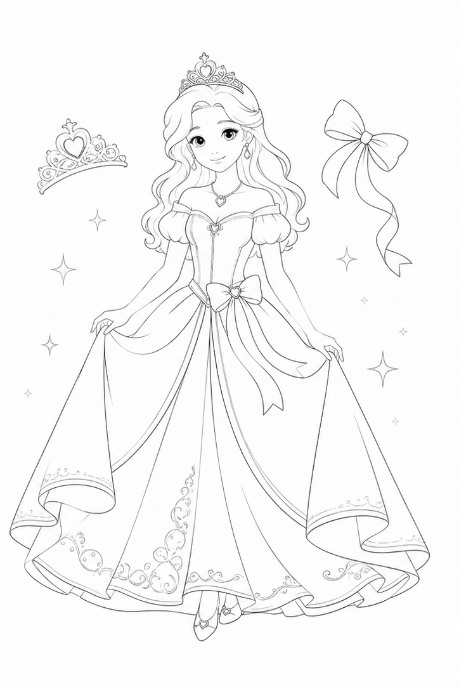
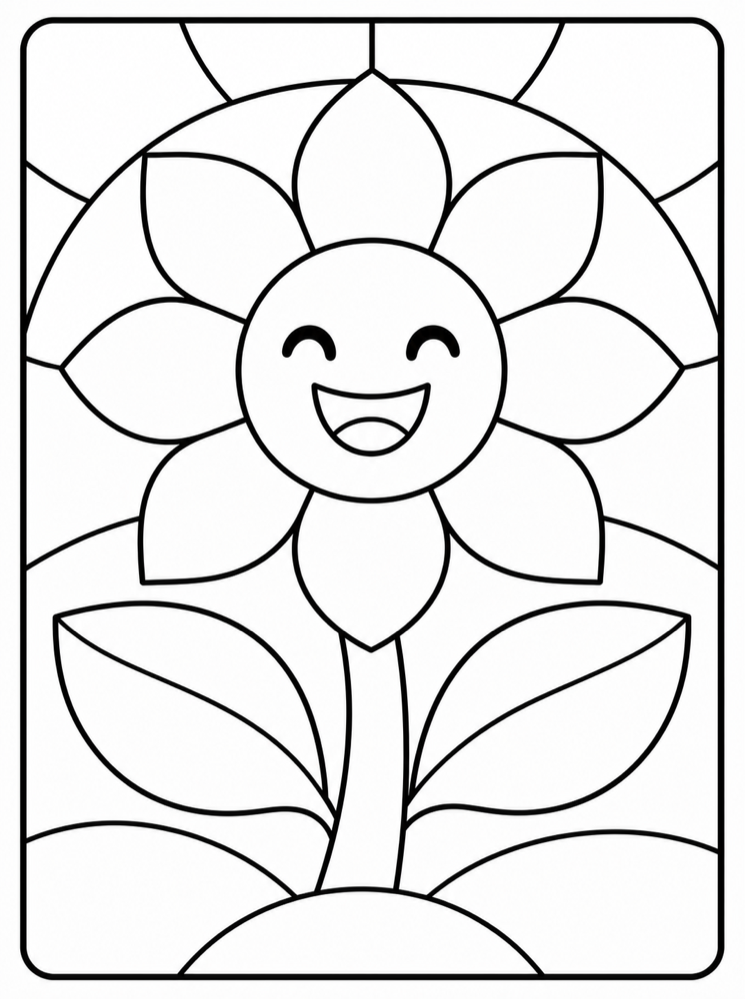

←
✦
✦
🔊
What will you make?
Pixel
Copy pictures with little tiles

Coloring
Colour a picture, or draw your own

Mosaic
Tap the shapes to fill them with color
←
✦
✦
♫
⌂
🔊
🧹
★
🖌️
Brush
🪣
Fill
🌈
Gradient
⭐
Stamp
↶
Undo
Tap a space to fill it.
From
To
★
♥
✿
Size
Turn
⌂
🔊
🧹
🖌️
Brush
Eraser
←
✦
✦
🔊
←
🔊
⌂
🔊
↶
🧹
★